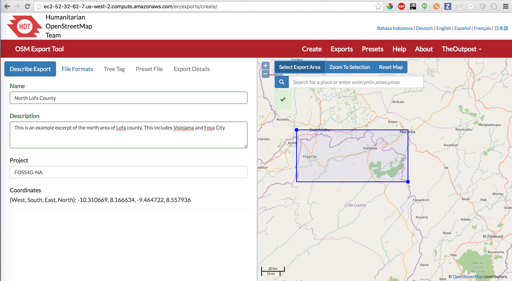

Creating the OSM basemap¶
Todo
Need to revise and add more details to this section.
The OpenMapKit has the ability to host map tiles on the phone even when it is disconnected from the Internet. This section shows you how to generate offline tiles. Previously, basemap tiles had to be scraped from an endpoint and then manually added to a mobile device. Now the HOT Export tool can be used to add basemap tiles to POSM and then deploy them to mobile devices and field papers. Both of those are covered in the Walkthrough Documentation.
HOT Export Tool¶
The HOT Export Tool is used to get the larger Area of Interest data from OpenStreetMap onto the POSM. The two main components that it packages for you are 1) OSM PBF, the vector data, and 2) MBTiles, basemap tiles.
POSM itself generates tiles, called POSM Carto on the device itself, but it is often useful to have the HOT Export Tool fetch tiles for you on the internet as well–especially if you want to have a satellite basemap.
Currently, the POSM HOT Export Tool can be reached at: https://export.hotosm.org/en/v3/
Name and describe your export. On the right, make sure you have selected Select Export Area, and draw a bounding box to server as your Area of Interest.
Describe an Export
Choose the file formats you want. You want to at least have OSM PBF. OSMAnd OBF is a bonus, because you can load your extract in OSMAnd. If you want the export tool to generate an MBTiles basemap from the internet, check MBTiles.
File Formats
If you would like to have an MBTiles basemap fetched from the internet (optional), you need to specify the tile template URL and zoom levels to be fetched. This task by far takes the longest, and the generated MBTiles file can be huge… You can use Geofabrik’s Tile Calculator to help you determine how big your MBTiles is likely to be.
MBTiles Source URL
Finally, you need to Create Export.

Export Details
The export begins by fetching OSM data from the Overpass API. This may take a while, and if you are creating MBTiles, it may even take hours. You will be emailed when the export is complete.

Beginning of Export
Once your export is completed, right click on POSM Bundle and copy the URL. You will use that URL as a data source in the POSM Administrative interface.

Completed Export
Sample OSM XML data¶
Buildings and roads.
Todo
The following links are broken.
- Dvizaraseka, Harare, Zimbabwe
- Fri Mar 6 2015
- 4 OSM XML Files
- 12MB Uncompressed
- West Section, Harare, Zimbabwe
- Fri Mar 6 2015
- 4 OSM XML Files
- 43.9MB Uncompressed
- Harare, Zimbabwe
- Fri Mar 6 2015
- 4 OSM XML Files
- 99.1MB Uncompressed